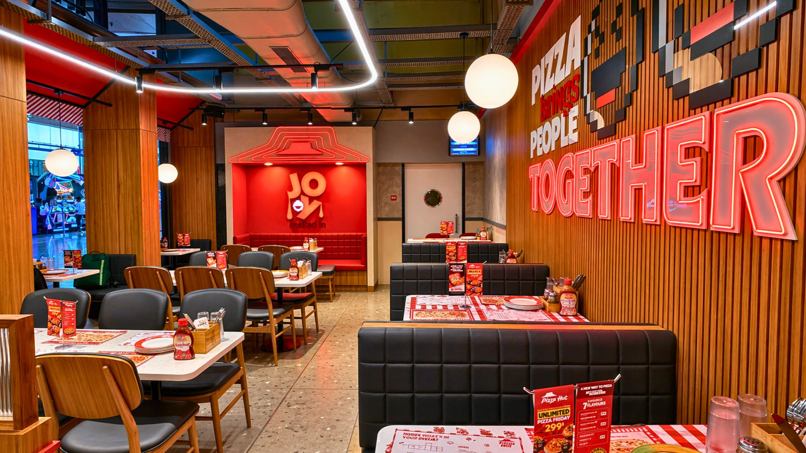
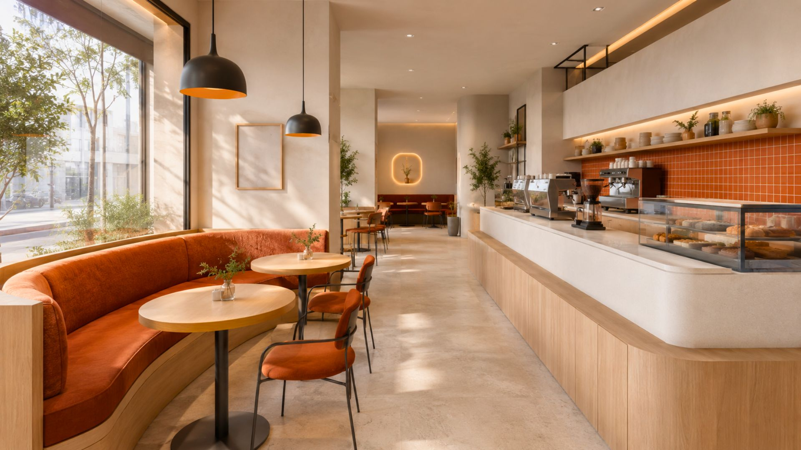
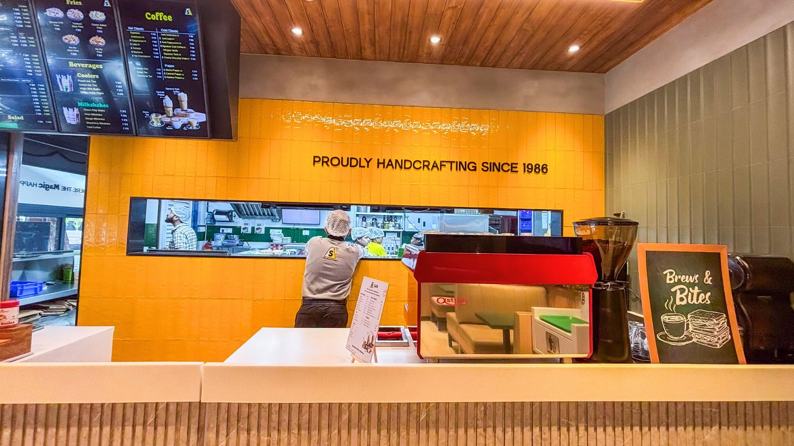
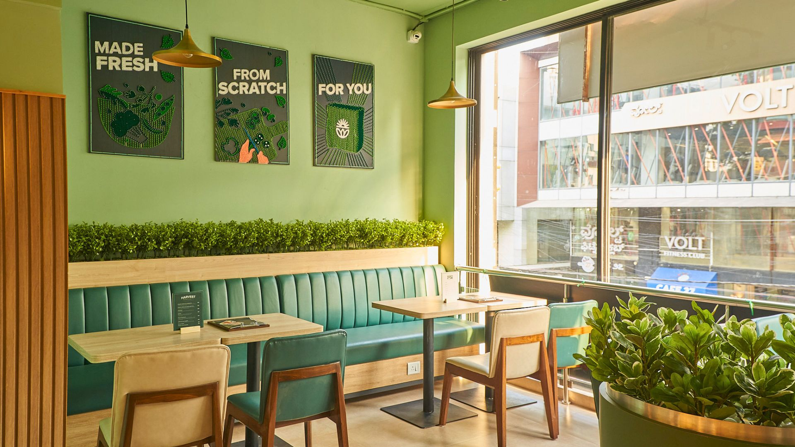
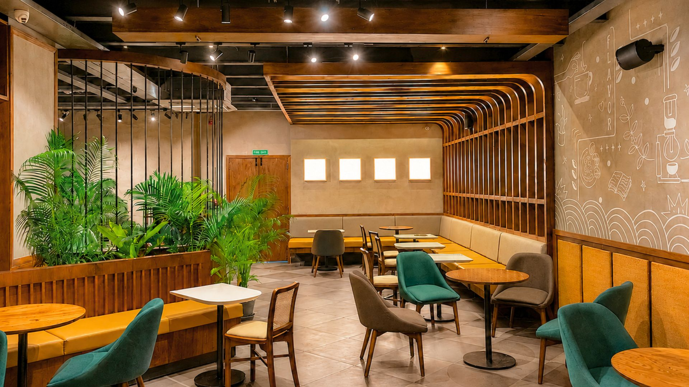
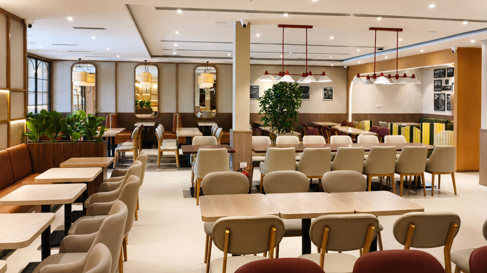
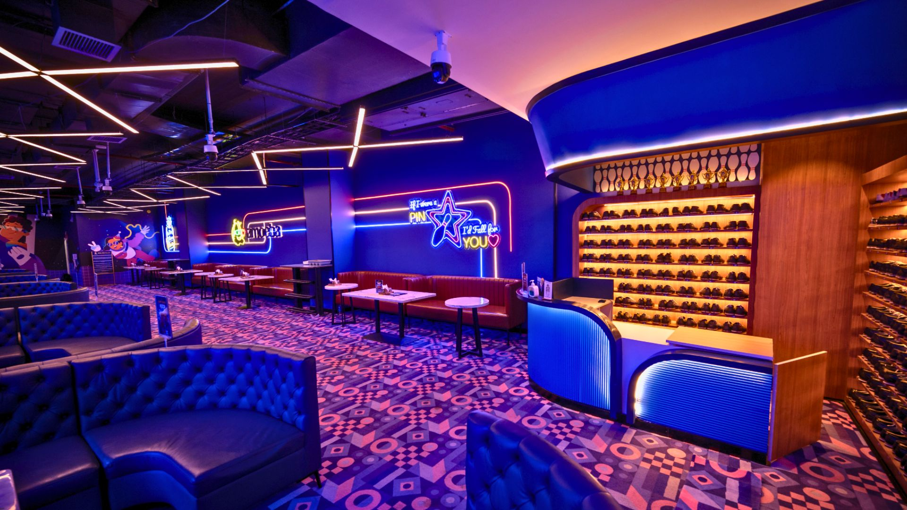
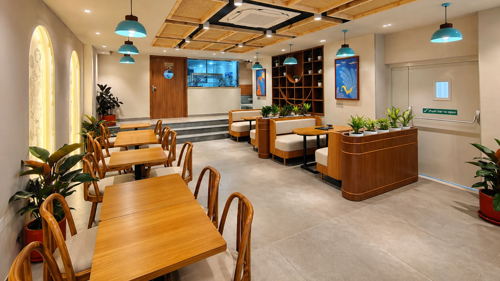
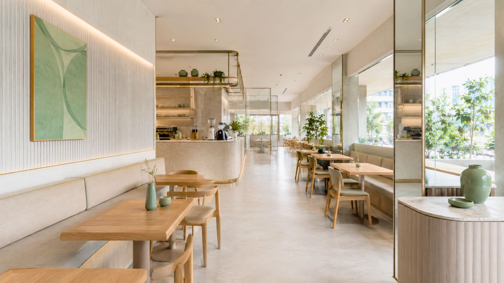
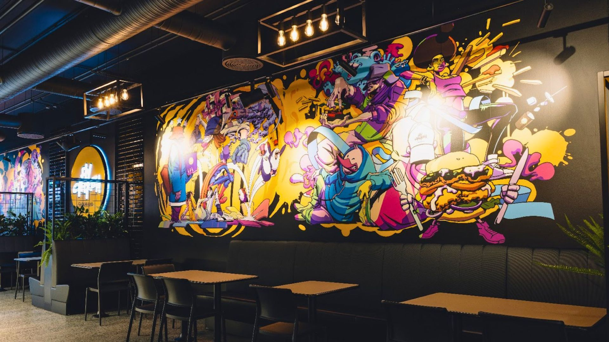

Coffee culture thrives in India across demographics, and a colour scheme for your café can well become the hero or villain of your dream project depending on which shade it displays. Successful café design requires balanced space orientation, décor, and furniture — colour selection significantly impacts customer psychology and behaviour, with warmer tones energising and stimulating appetite, and cooler tones promoting relaxation.
1. Red

Increases heart rate and impulse eating tendencies, creating vibrant atmospheres. Risk: customers may feel irritated or claustrophobic if overused.
2. Orange

A warm tone providing friendly vibes. Works best paired with contrasting shades like white, and can introduce warmth through elements like fireplaces.
3. Yellow

A peppy, warmer shade. Combines effectively with green, white, or red to create vibrant, pleasant environments.
4. Green

Symbolises nature and health. Pairs well with brown or yellow to convey a sustainable, organic feel.
5. Brown

A coffee-inspired neutral. Works with darker shades for elegance, or lighter tones for spaciousness. Complements red, green, white, and soft tints.
6. White

Creates serenity and spaciousness. Serves effectively as a secondary or accent colour when paired with contrasting wall colours.
7. Purple

A quirky, bohemian option requiring careful implementation. Risks making spaces appear dark, cramped, and claustrophobic if misapplied.
8. Light Grey

Suitable for smaller spaces needing an expansion illusion. Balances bold palettes when combined with darker or brighter shades.
9. Beige

A light colour emanating tranquility. Ideal for attracting regular clientele who spend considerable time and money in your space.
10. Black

Sophisticated when paired with white. Enhances other colours' vibrancy and visual impact when used as an accent.
Conclusion
Colour palettes fundamentally influence customer experience and business success. We'd recommend consulting professional interior designers to create an eclectic, unique scheme rather than picking colours in isolation.
Choosing colours for your café? At SprintCo, we pick palettes that work with your space, not against it. Let's talk about your project.